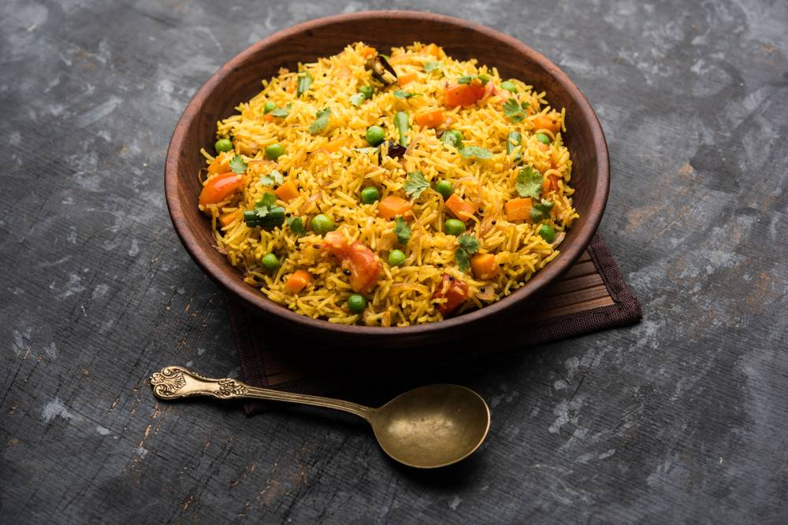
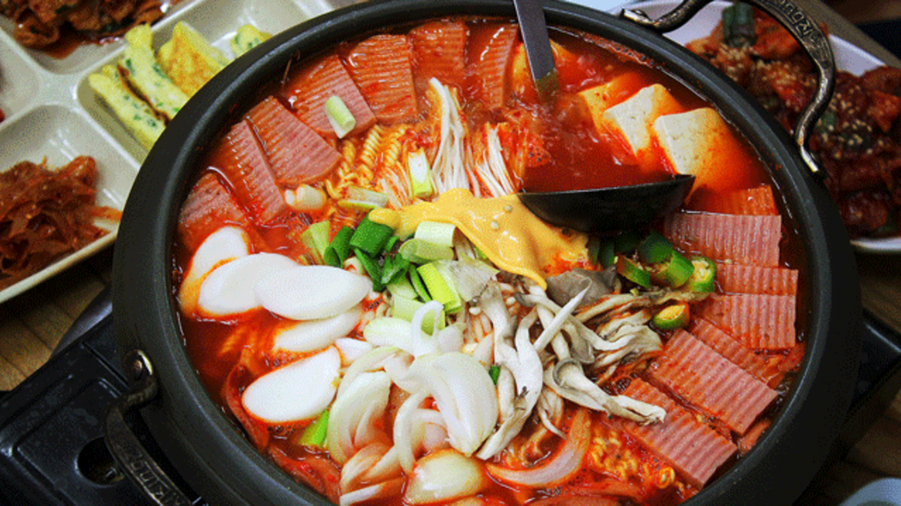
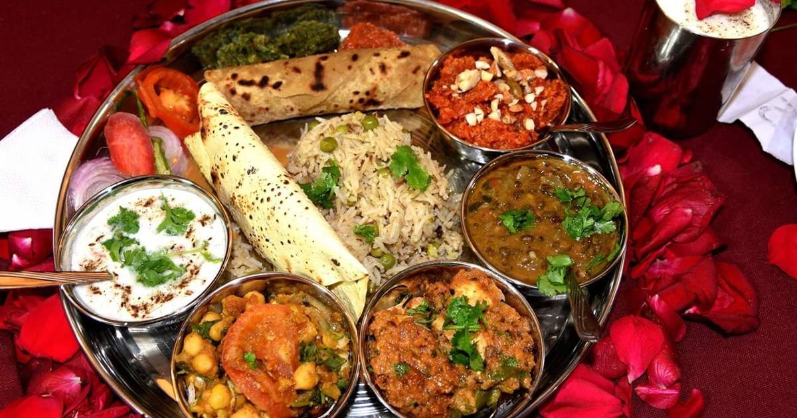
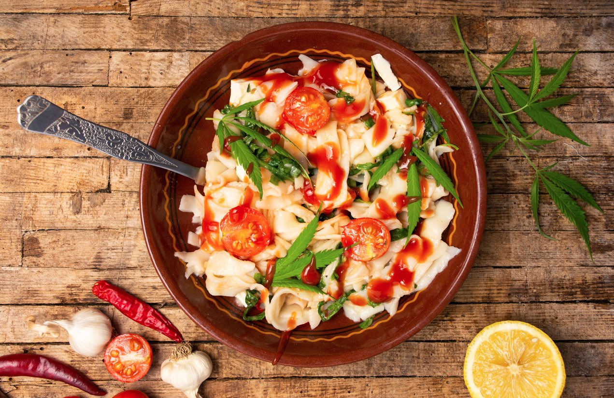

RESTAURANT DISHES

Pulao is a one pot rice dish made by cooking fragrant basmati rice with aromatic spices, herbs & sometimes stock.

A soup is like a friend in need – an effective mood-changer, a soul-searcher, a nourisher.
Noodles are an essential ingredient and staple in Chinese cuisine.

A typical punjabi thali will also have raita or curd.

Dessert is a course that concludes a meal.